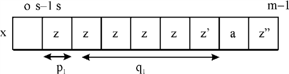

a. To give an algorithm that takes the input as a patternand calculates the value
This can be done so using Naive approach.
The algorithm is given below:
1.Text size ();
// inputs the text size
2. Pattern size ();
//inputs the text pattern
3. for
4 {
5. if (pattern =text )
add-result
6 }
The running of the algorithm would be This is because one power of m for loop that is “for” loop (worst case) and another for checking process of “if” statement because it is run up-to m in worst case scenario.b. Taking the pattern and is defined as
Taking the pattern involving one string:
 Or
Or 
When matching the above pattern, it iterates in one cycle maximum.
Taking the pattern involving two strings:
When trying to match the given string with the above pattern. It will match the string as single one or the text as a two together completing it in maximum one or two iteration.
Taking the pattern of three strings:
Again while trying to match the above string either it matches a single string or a few strings together or all might be same.
Similarly, it can be done so for  strings.
strings.
Each time involving time maximum;
c. To show that the repetition matcher algorithm given on page 1013 for pattern P in a text, takes the time
The given Galil-Seiferas algorithm consists of preprocessing phase and searching phase.
The preprocessing phase of Galil-Seiferas algorithm involves
finding decomposition of following
that  has at least
one prefix period and the
searching phase works in scanning the text for each occurrence of
and checks
immediately if
has at least
one prefix period and the
searching phase works in scanning the text for each occurrence of
and checks
immediately if  occurs just
before .
occurs just
before .

While searching for in:
a. If matches
with a shift of length  , the
comparisons are continued with
, the
comparisons are continued with
b. Else if a mismatch occurs with and then a shift of length can be done and comparisons are carried on with
The preprocessing will incur times and
the searching phase  times and it
is noticed in line 3 of algorithm that algorithm runs for.
times and it
is noticed in line 3 of algorithm that algorithm runs for.
The total process therefore will take time.